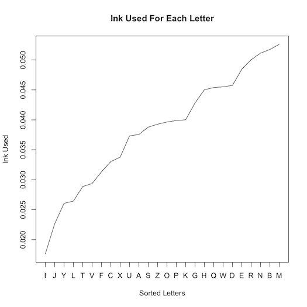

How Much Ink Is Used For Each Letter?
Today I became curious about how much ink is needed to print each of the 26 letters of the English alphabet. Naturally I wrote a program to tell me...
I knew that with the Arial font, the letter 'I' would take the least ink and the letter 'M' would take the most. But what is the exact breakdown? Enter Perl!
First comes the program preamble. I use the fabulous Imager and handy Statistics::Frequency modules:
#!/usr/bin/env perl
use strict;
use warnings;
use Imager;
use Statistics::Frequency;
Next we declare the font to use (which can be given as a program argument), the image dimensions, and a bucket for our letter values:
my $file = shift || '/Library/Fonts/Arial.ttf';
my $font = Imager::Font->new(file => $file)
or die "Cannot load $file: ", Imager->errstr;
# Image dimensions
my ($x, $y) = (50, 50);
my %letters;
And here is the meat of the program - a loop over each letter, collecting the number of black pixels:
for my $letter ('A' .. 'Z') {
# Create a blank, white canvas
my $img = Imager->new(xsize => $x, ysize => $y);
$img->box(
xmin => 0,
ymin => 0,
xmax => $x - 1,
ymax => $y - 1,
filled => 1,
color => 'white',
);
# Add the letter
$img->string(
font => $font,
text => $letter,
x => 10,
y => 42,
size => 50,
color => 'black',
aa => 1,
);
# Detect black pixels
for my $i (0 .. $x - 1) {
for my $j (0 .. $y - 1) {
my $color = $img->getpixel(x => $i, y => $j);
my ($red, $green, $blue) = $color->rgba;
$letters{$letter}++
if $red == 0 && $green == 0 && $blue == 0;
}
}
}
This produces and analyzes ephemeral images like this:
Lastly we compute the proportional frequencies given our letters:
my $freq = Statistics::Frequency->new;
$freq->add_data(\%letters);
my %prop = $freq->proportional_frequencies;
for my $key (sort { $prop{$a} <=> $prop{$b} } keys %prop) {
print "$key, $prop{$key}\n";
}
Running this program produces this list:
I, 0.0176168338634695
J, 0.0226327379495963
Y, 0.0260582334230487
L, 0.0264252507952043
T, 0.0288720332762417
V, 0.0293613897724492
F, 0.0313188157572792
C, 0.0330315634940054
X, 0.0337655982383166
U, 0.0373134328358209
A, 0.0375581110839246
S, 0.0387815023244434
Z, 0.0392708588206508
O, 0.0396378761928065
P, 0.0398825544409102
K, 0.0400048935649621
G, 0.0428186934181551
H, 0.0450207976510888
Q, 0.0453878150232444
W, 0.0455101541472963
D, 0.0457548323954
E, 0.0484462931245412
R, 0.0500367017372156
N, 0.0511377538536824
B, 0.0517494494739418
M, 0.0526058233423049
(The ASCII letters listed above are not the same as the anti-aliased Arial images produced by the code.)
So if plotted (with the venerable program R), what does this look like?

The lowercase letter breakdown is this:
i, 0.0165167920719398
l, 0.0198201504863278
r, 0.0198201504863278
j, 0.0227564690768948
t, 0.0256927876674619
v, 0.0282620664342081
f, 0.0291796659937603
c, 0.0321159845843274
x, 0.0345017434391632
y, 0.0352358230868049
u, 0.0379886217654616
s, 0.038172141677372
n, 0.0387227014131033
k, 0.0400073407964764
o, 0.0400073407964764
h, 0.04147550009176
z, 0.0431271792989539
p, 0.0455129381537897
b, 0.0464305377133419
a, 0.0482657368324463
e, 0.0489998164800881
q, 0.0491833363919985
d, 0.0513855753349238
w, 0.0521196549825656
g, 0.0565241328684162
m, 0.0581758120756102
And here are the digits:
1, 0.0554662379421222
7, 0.079983922829582
3, 0.0936495176848875
4, 0.0996784565916399
2, 0.104501607717042
0, 0.107315112540193
5, 0.109324758842444
9, 0.112942122186495
6, 0.118167202572347
8, 0.118971061093248